Arguments
- mapping
Standard aesthetic mapping
aes()input for ggplot2.- lower
Lower quantile for the time series.
- upper
Upper quantile for the time series.
- alpha
Transparency of the ribbon fill.
- ...
Additional arguments passed to
stat_summary.
Examples
param <- param.icm(inf.prob = 0.2, act.rate = 0.25)
init <- init.icm(s.num = 500, i.num = 1)
control <- control.icm(type = "SI", nsteps = 250, nsims = 5)
mod1 <- icm(param, init, control)
df <- as.data.frame(mod1)
df.mean <- as.data.frame(mod1, out = "mean")
library(ggplot2)
ggplot() +
geom_line(data = df, mapping = aes(time, i.num, group = sim),
alpha = 0.25, lwd = 0.25, color = "firebrick") +
geom_bands(data = df, mapping = aes(time, i.num),
lower = 0.1, upper = 0.9, fill = "firebrick") +
geom_line(data = df.mean, mapping = aes(time, i.num)) +
theme_minimal()
